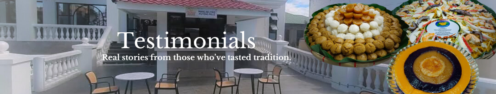
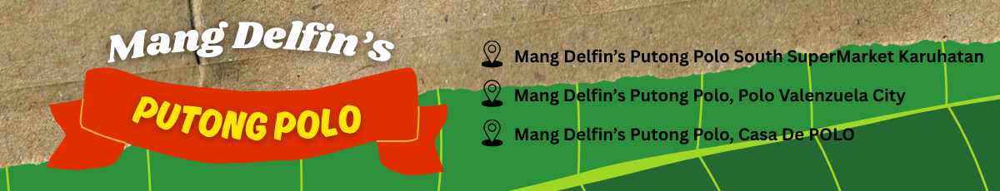

Mang Delfin's Putong Polo
Authentic Taste, Every Bite
Authentic Taste, Every Bite



Delicious and authentic.
Reminds me of my childhood favorites!
Mark Enigo
My go-to whenever I’m craving Filipino delicacies.Highly recommended!
Andrei Quejada
Perfectly made native treats.You can really taste the love and tradition.
John Raymond C. Geronimo
Share your stories here!